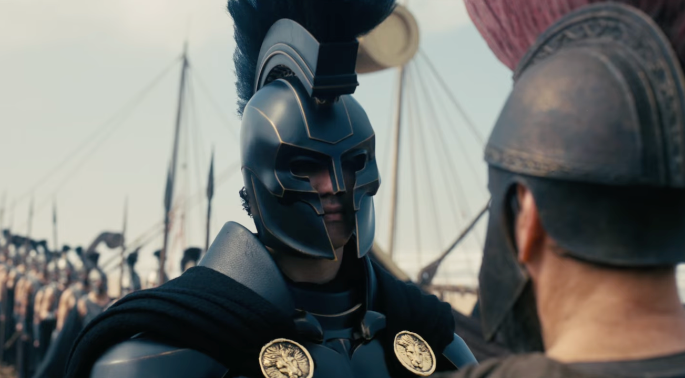

პრემიერა
კრისტოფერ ნოლანის ახალი ეპიკური პროექტი — „ოდისეა“ (The Odyssey)
1 ივლისი, 2026

ჰოლივუდის წამყვანმა გამოცემებმა (The Hollywood Reporter, Deadline) დაადასტურეს, რომ კრისტოფერ ნოლანის მომავალ სამეცნიერო-ფანტასტიკურ ეპოსს ჰქვია „ოდისეა“ (The Odyssey). ინსაიდერული წყაროების მიხედვით, ფილმი წარმოადგენს ჰომეროსის კლასიკური „ოდისეას“ ფუტურისტულ, კოსმიურ ადაპტაციას.
რატომ არის ეს ფილმი ასეთი მნიშვნელოვანი?
ეს არის ნოლანის პირველი ფილმი მას შემდეგ, რაც მან „ოპენჰაიმერით“ ოსკარების ტრიუმფი მოიპოვა. სტუდია Universal Pictures პროექტს სრულ შემოქმედებით თავისუფლებას და ასტრონომიულ ბიუჯეტს (სავარაუდოდ, $200 მილიონზე მეტს) უთმობს. „ოდისეა“ მიზნად ისახავს, გახდეს არა უბრალოდ მორიგი ბლოკბასტერი, არამედ სამეცნიერო ფანტასტიკის ახალი ეტალონი.